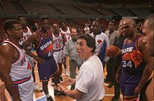
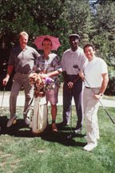
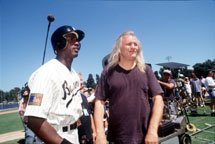

- IVAN REITMAN (producer)
- JOE MEDJUCK (producer)
- DANIEL GOLDBERG (producer)
- JOE PYTKA (director)
- DAVID FALK (executive producer)
- KEN ROSS (executive producer)
- GEOFFREY KIRKLAND (production designer)
- MICHAEL CHAPMAN (director of photography)
- SHELDON KAHN (editor/co-producer)
- GORDON WEBB (co-producer/unit production manager)
- CURTIS POLK (co-producer)
- JAMES NEWTON HOWARD (Composer)
- BRUCE SMITH (Co-director of Animation)
- TONY CERVONE (Co-director of Animation)
- RON TIPPE (animation producer)
- BILL PERKINS (Animation Art Director)
- ED JONES (Special Visual Effects)
IVAN REITMAN (producer), as a producer and director, has created many of American cinema's most successful and best-loved feature film comedies and has worked with Hollywood's acting elite.
Reitman currently heads Northern Lights Entertainment, a film and television production company. He is currently in production, as both producer and director, of the feature film "Fathers' Day," starring Robin Williams and Billy Crystal, for Warner Bros.
Reitman has produced such hits as the ground-breaking sensation "National Lampoon's Animal House," which introduced John Belushi to American filmgoers, and the family features "Beethoven" and Beethoven's 2nd." His directing credits include "Meatballs" and "Stripes," films which helped launch the career of Bill Murray; the two "Ghostbusters" films, starring Bill Murray, Dan Akyroyd and Harold Ramis; and "Dave," which starred Kevin Kline and Sigourney Weaver.
 With "Twins," Reitman created an entirely new comedic persona for action hero Arnold Schwarzenegger -- and forged a personal and professional relationship that continued with "Kindergarten Cop" and "Junior." Acclaimed dramatic actors such as Robert Redford, Debra Winger, Sigourney Weaver and Emma Thompson have also revealed untapped comic talents under Reitman's direction.
In 1984, Reitman was honored as Director of the Year by the National Association of Theater Owners and the next year received a Special Achievement Award at the Canadian Genie awards. In 1979 and again in 1989 Reitman was honored with the People's Choice Award, for his films "Animal House" and "Twins." In November, 1994, Reitman became the third director honored by Variety magazine in a special Billion Dollar Director issue.
Future motion-picture projects will find Reitman producing a remake of "The Creature From the Black Lagoon," as well as producing and directing "6 Days/7 Nights," starring Harrison Ford.
In addition to his achievements in film, Reitman has also forged a formidable career on television. He recently produced the HBO telefilm "The Late Shift," based on Bill Carter's non-fiction book about the late-night television wars; the production received seven Emmy nominations. Other recent producing endeavors include "Commandments," starring Aidan Quinn and Counrtney Cox; and "Private Parts," starring Howard Stern.
His television projects include the Emmy-nominated children's show "The Real Ghostbusters" and the Saturday morning animated series "Beethoven" for CBS. He is presently working on a new animated children's show, "Mummies."
Reitman was born in Czechoslovakia and fled with his family to Canada at the age of four. He attended Canada's McMaster University, where he produced and directed several television shorts. He followed with a live television show, "Greed," with Dan Akyroyd as its announcer.
"Spellbound," which Reitman produced for the live stage, evolved into the Broadway hit "The Magic Show," starring Doug Henning. He continued producing for the stage with the Off-Broadway hit "The National Lampoon Show," and returned to Broadway to produce and direct the musical "Merlin," earning a Tony nomination for directing.
JOE MEDJUCK (producer) taught for 12 years at the University of Toronto before beginning his long association with Ivan Reitman. Medjuck served as associate producer on the Broadway musical "Merlin" and the films "Stripes" and "Ghostbusters"; as executive producer on "Legal Eagles," "Kindergarten Cop," "Twins," "Ghostbusters II," "Dave" and "Junior"; and as producer of "Big Shots," "Stop...Or My Mom Will Shoot," "Beethoven" and "Beethoven's 2nd."
He also executive produced the Emmy-nominated children's show "The Real Ghostbusters" and co-executive produced the Emmy-nominated HBO telefilm "The Late Shift." Currently he is executive producing the films "Private Parts" and "Fathers' Day," the latter starring Robin Williams and Billy Crystal, and producing "Commandments," starring Aidan Quinn and Courtney Cox.
Producer DANIEL GOLDBERG is a longtime colleague of Reitman's, having first collaborated with him when he starred in one of Reitman's short films, "Orientation," during their studies at McMaster University.
Currently Goldberg is producing "Commandments" and "Private Parts," both to be released next year. He also co-executive produced this year's Emmy nominated HBO telefilm, "The Late Shift."
Goldberg served as writer/producer on the films "Stripes" and "Meatballs" and as writer for "Space Hunter: Adventures in the Forbidden Zone" and "Heavy Metal." He wrote and directed "Feds" and was second-unit director on "Beethoven's 2nd" and "Junior," which he also executive produced. Currently, Goldberg is executive producing "Fathers' Day."
Director JOE PYTKA, considered by most to be the pre-eminent director of television commercials, makes only his second foray into the feature-film arena with "Space Jam."
 With more than 5,000 TV spots to his credit, many of Pytka's creations have become part of the American cultural vernacular. These advertising classics include the "Thank you for your support" campaign for Bartles & Jaymes; the "Bo knows" ads for Nike; Michael Jordan and Larry Bird playing "Nothing but net" for McDonald's; and Ray Charles singing "Uh huh" for Diet Pepsi. He is also responsible for the hot-rod infant in the DuPont Stainmaster ads, and for bringing together former Governors Ann Richards and Mario Cuomo in their Frito-Lay commercial.
Pytka, born and raised in the Pittsburgh suburb of Braddock, Pennsylvania, has always had a flair for things visual. At the age of 8, he was studying art at Pittsburgh's Carnegie Museum. Accepted into the art program at Carnegie Tech (now Carnegie-Mellon University), he instead opted to follow his Fathers' advice to "do something practical" and enrolled at the University of Pittsburgh to study chemical engineering. That brief sojourn proved to be, in his own words, "disastrous," and Pytka took a job at a film lab in Pittsburgh. There, he learned the basics of his craft.
His first break came when he got the chance to shoot some documentary footage for WQED, the public broadcasting station in Pittsburgh. He started shooting commercials to supplement his income and hasn't stopped since.
Pytka has directed one other feature film, "Let It Ride," which starred Richard Dreyfuss, and currently has other projects in development through his Venice, California-based production company, PYTKA.
Executive producer DAVID FALK has represented Michael Jordan for many years as an attorney and business manager through his agency, F.A.M.E., which represents an elite group of superstar athletes, including Patrick Ewing, Shawn Bradley and Muggsey Bogues, who appear in "Space Jam."
Executive producer KEN ROSS created and ran CBS-Fox Video Sports, a home-video label. Through it, he was responsible for creating Michael Jordan's series of best- selling home videos. He also executive produced videos with such sports immortals as Julius Erving, Kareem-Abdul Jabbar, Micky Mantle and Magic Johnson.
In addition, Ross executive produced numerous network and cable specials, documentaries and music home videos, and oversaw the film restoration and theatrical re-issue of the Academy Award-winning musical, 'My Fair Lady."
Production designer GEOFFREY KIRKLAND received an Academy Award nomination for his design of "The Right Stuff" in 1983. Among the other films on which he has imprinted a distinctive look are "Bugsy Malone," "Midnight Express," "Fame," "Shoot the Moon," "Birdy," "Mississippi Burning," "Come See the Paradise" and "Rennaissance Man."
Director of photography MICHAEL CHAPMAN's credits include "The Last Detail," "Taxi Driver," "The Front," "The Last Waltz," the Philip Kaufman remake of "Invasion of the Body Snatchers," "Raging Bull" (for which he received an Oscar nomination), "Dead Men Don't Wear Plaid," "The Lost Boys," "Shoot to Kill," "Scrooged," "Ghostbusters II" (directed by Ivan Reitman), "Rising Sun," "The Fugitive" (for which he received a second Oscar nomination) and "Primal Fear."
SHELDON KAHN (editor/co-producer) won the British Academy Award and an Academy Award nomination for co-editing "One Flew Over the Cuckoo's Nest," and earned an other Oscar nomination for co-editing "Out of Africa." He was associate producer of Reitman's "Legal Eagles," "Ghostbusters II," "Twins," "Kindergarten Cop," "Junior," "Beethoven" and "Beethoven's 2nd." He was also co-producer of "Casual Sex?"
Among Kahn's many feature film credits as editor are "Dave," "The Electric Horseman," "Absence of Malice," "Private Benjamin," "Same Time Next Year" and "La Bamba." Currently, Kahn is working on "Fathers' Day."
Co-producer/unit production manager GORDON WEBB served in the same capacity on "Junior," "Beethoven" and "Beethoven's 2nd." He was an associate producer on Reitman's "Dave," "Kindergarten Cop," "Ghostbusters II" and "Twins." He co-produced "The Couch Trip" and was associate producer on such other films as "Brubaker," "Modern Problems," "Fletch," "Wildcats" and "The Golden Child."
The son of the late producer/director Harry S. Webb, Gordon Webb began his career as an assistant director on "Jubal Troop." In the '60s and '70s, his television credits as a producer include movies-of-the-week and television pilots and, as an assistant director/production manager, the "Perry Mason" series, "Gunsmoke," "The Wild, Wild West" and "Mission: Impossible."
Webb's other feature-film credits include "An Enemy of the People," "Making Love," "The Buddy System," "The Evil That men Do," "SSSsss," "Night Train" and "Macho Calahan." Currently, Webb is working on "Fathers' Day."
Co-producer CURTIS POLK has worked with David Falk for several years as a contract negotiator for Falk's management company, Falk Associates Management Enterprises (F.A.M.E.) Both an attorney and a certified public accountant, Polk is president and chief operating officer of F.A.M.E. and is president of its related financial services affiliate, Financial Advisory Management Enterprises. He founded both companies with David Falk in 1992.
A graduate of the University of Maryland, Polk earned his law degree at the National Law Center at George Washington University and served on the Center's Law Review. He began his career as a tax consultant for Touche Ross and Co. before becoming a financial advisor at Smathers, Hickey & Smathers in 1983. He was named president of ProServ Financial Services in 1989.
During the summer of 1996, Polk and his partners negotiated four of the five largest contracts in NBA history.
Composer JAMES NEWTON HOWARD has been honored with three Academy Award nominations, two for Best Score, for "The Prince of Tides" and "The Fugitive," and one for Best Original Song, for "Look What Love Has Done" from "Junior." This song, which he co-composed, was also nominated for a Golden Globe Award.
One of the busiest and most respected composers in Hollywood, Howard's most recent projects include "Restoration," "Trigger Effect," "Primal Fear" and two upcoming movies, "One Fine Day" and "Dante's Peak."
Among his other film-scoring credits are "Waterworld," "French Kiss," "Outbreak," "Just Cause," "Junior" (for Ivan Reitman), "Wyatt Earp," "The Fugitive," "Intersection," "Dave," "Falling Down," "The Saint of Fort Washington," "Alive," "American Heart,' "Night and the City," "Glengarry Glen Ross," "The Prince of Tides," "Grand Canyon," "My Girl," "The Man in the Moon," "Dying Young," "Guilty By Suspicion," "Three Men and a Little Lady," "Flatliners," "Pretty Woman," "The Package," "Major League," "Coupe De Ville," "Everybody's All-American," "Some Girls," "Promised Land," "Five Corners" and "8 Million Ways to Die."
In addition to his motion picture work, Howard has earned two Emmy Award nominations, for his music for "Men" in 1989 and for the series "E.R." He has also scored the HBO program "The Image," the PBS production "Trying Times," the HBO telefilm "Somebody Has to Shoot the Picture," and the miniseries "2000 Malibu Road."
About the Animators...BRUCE SMITH (Co-director of Animation) grew up in Los Angeles and graduated from the California Institute of the Arts, where he majored in character animation. Smith was the directing animator on several short films for Disney/MGM Studios in Florida, after serving as an animator on "Who framed Roger Rabbit?" He also directed the animated feature "Bebe's Kids."
TONY CERVONE (Co-director of Animation) is a native of Chicago and a graduate of Columbia College of Chicago, where he majored in film/video and animation. He has worked as an animator on Warner Bros.' "Steven Spielberg Presents Tiny Toon Adventures," "Steven Spielberg Presents Tazmania" and "Steven Spielberg Presents Animaniacs," and he recently worked on the Chuck Jones animated theatrical short, "Carrotblanca."
Animation producer RON TIPPE joined "Space Jam" from The Walt Disney Company, where he was a producer, managing the Disney-Paris Feature Animation Studio while simultaneously producing the 1995 Oscar-nominated short film, "Runaway Brain," starring Mickey Mouse. Prior to his tenure with Disney, Tippe worked as a screenwriter in Los Angeles for seven years.
Earlier, Tippe produced and directed television commercials in New York and spent six years as Artistic Director of The Incredibly Far Off-Broadway Ensemble Theater. He also directed plays in regional theater after beginning his entertainment career as a professional guitarist and songwriter.
BILL PERKINS (Animation Art Director) graduated with honors from Art Center College in Pasadena, California, and was a gallery painter for six years before entering the field of animation. He worked for The Walt Disney Company as a layout artist on such animated features as "Oliver & Company," "The Little Mermaid" and "The Rescuers Down Under"; he then graduated to the position of art director on "Aladdin" and on the upcoming "Fantasia Continued."
Academy Award-winner ED JONES (Special Visual Effects) is a pioneer in the visual-effects industry, having contributed his creativity to more than 200 films and 14 of the top-20 grossing motion pictures in history.
In 1989, Jones received both an Oscar and a BAFTA (British Academy Award) for his contribution in revolutionizing the animation techniques used in producing "Who Framed Roger Rabbit?" and he received a BAFTA Award the year before for his work on "The Witches of Eastwick."
Jones founded Cinesite in 1992 for the Eastman Kodak Company. Under his leadership as president and CEO, Cinesite has become the first entertainment company to offer complete digital production services in Europe and the United States.
Prior to his involvement with Cinesite, Jones held a variety of creative and management positions with LucasArts' Industrial Light & Magic over a 13-year period.